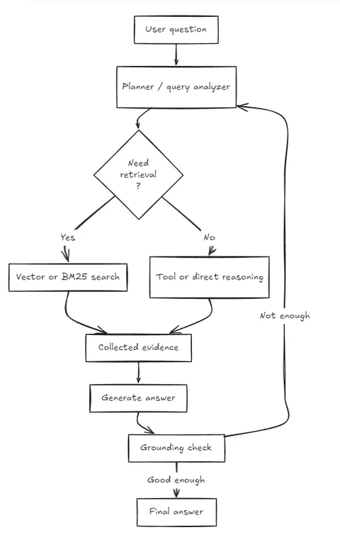

What is Agentic RAG?
By Sukalyan RoyPublished Updated 10 min read

TL;DR #
-
Normal RAG is usually a fixed pipeline: retrieve context, send it to the model, return an answer.
-
Agentic RAG adds decisions inside the pipeline: when to search, where to search, whether to call tools, and whether the answer is grounded enough.
-
This is useful when questions are vague, multi-step, tool-dependent, or spread across multiple sources.
-
The tradeoff is complexity, latency, cost, and harder evaluation.
Project status
My own RAG project is still mostly a controlled local pipeline, but it is starting to need agent-like behavior around query analysis, retrieval strategy, validation, and tool orchestration.
Where we are now #
In the previous posts, we went over the basic ideas of a RAG, and some ways to optimize our prompting so that we can use existing solutions.
The next step is to try and recreate such tools ourselves.
We'll first continue with some more ideas regarding the current state of RAG and how people use it, and then I'll walk you through my most recent attempt at a fully functional system.
The old version was simple:
-
split documents into chunks,
-
embed the chunks,
-
retrieve top-k chunks,
-
stuff them into the prompt,
-
ask the LLM to answer.
The newer version of RAG is more like a decision system. It asks:
-
Do I even need retrieval for this query?
-
What should I retrieve?
-
Which source should I retrieve from?
-
Should I use vector search, keyword search, SQL, web search, an API, or a calculator?
-
Did I retrieve enough evidence?
-
Should I try again with a better query?
-
Can I prove the final answer from the sources?
Impact of Ever growing context #
I was going through some blogs and other articles regarding the evolution of RAGs with constantly increasing context window sizes.
It's even more noticeable when there are models, that claim to work with 12 million token context windows like SubQ
That's 12x the frontier model available publicly at the time of writing, and that too for the overpriced 1M token variant of the model, while the normal ones have barely 250k context.
So, what are all the problems with that approach?
Long Context is Expensive #
If the answer is in 5 useful chunks, sending 600K tokens is wasteful.
It is like asking one simple question but inviting the whole company to the meeting. You technically have access to everyone, but you are paying for noise.
In RAG, retrieval is the act of asking the right person first.
For a local project like mine, this matters even more. I am not running huge hosted models with infinite budget. I am using Ollama locally.
Tokens are not just costs, but how quickly i'll get any response.
The Difference between "Yes I can reasonably see myself using this" and, like my old unposted approach, "This is so slow, it's useless even if it gives me the best answers ever"
Long context is noisy #
All LLMs, no matter how sophisticated, have a tendency to focus more on the first few and last few tokens of a prompt.
So, for really large contexts, whatever is in between is barely given any attention and is as if they did not exist at all sometimes.
This is the classic "lost in the middle" problem.
A smaller, cleaner context is usually better than a huge messy one.
Long context does not solve source selection #
Even if you can paste a lot of text, you still need to decide what belongs in the prompt.
Should the model see old docs or new docs? Should it see public docs or private docs? Should it use the PDF, the CSV, the API, or the web? Should it search code with keyword search instead of semantic search?
Long context does not remove the need for retrieval logic. It just hides it.
But can't Agents solve this? #
It's pretty easy to see how the agents that we commonly use, do their job.
They use lexical search alot, using things like grep and regular expressions.
This "Keyword Search" is highly effective for queries that deal with proper nouns, function names, class names, route and file paths and more.
But it's useless when facing with any of the following formats that's not plain text:
-
PDFs,
-
scanned documents,
-
diagrams,
-
charts,
-
screenshots,
-
tables,
-
policy docs,
-
contracts,
-
emails,
-
slide decks.
You cannot grep a diagram.
Multimodal Agentic AI can somewhat help but again we return to the problem of choice. Else it will have to go through every possible image, ending your monthly tokens with a single prompt.
Code may want grep or BM25. Prose may want dense embeddings. Financial data may want SQL. Fresh data may want web search. Images may want OCR or vision embeddings. Complex questions may want more than one of these.
What is Agentic RAG? #
In essence it's the following:
Instead of hardcoding one retrieve-then-generate path, give the system the ability to plan, choose tools, retrieve iteratively, validate evidence, and then answer.
This has several parts to it as follows:

Query preprocessing #
A user rarely writes the perfect retrieval query.
They might ask:
What were the main numbers last quarter?
A human understands that this might mean revenue, profit, burn rate, customer growth, or some company-specific KPI. A basic RAG system may embed that exact sentence and hope for the best.
An agentic system can rewrite it:
-
identify that "last quarter" needs a date range,
-
detect that "main numbers" probably means KPIs,
-
include synonyms like revenue, margin, growth, churn,
-
split the query into subqueries,
-
add metadata filters like
document_type=reportordepartment=finance.
My project already has a small version of this in QueryAnalyzer. It expands common abbreviations like AI, ML, NLP, classifies intent, detects query type, extracts simple entities, and adds hints like "include step-by-step instructions" or "compare and contrast".
Routing #
Routing means choosing the right path.
Not every query needs retrieval.
If the user says:
Rephrase your last answer.
The system should not search the knowledge base again.
If the user says:
What is in my uploaded ML notes?
Then retrieval is needed.
If the user says:
What is the weather tomorrow?
Local document retrieval is the wrong tool. It needs a live web/API call.
If the user asks:
Compare the refund policy in the PDF with the billing rules in the CSV.
That may need multiple retrievals and maybe structured parsing.
This feature is still a work in progress for me.
Tool selection #
A basic RAG project usually has one tool: vector search.
An agentic RAG system may choose between:
-
vector search for semantic similarity,
-
BM25/keyword search for exact terms,
-
SQL for structured data,
-
web search for recent information,
-
API calls for live systems,
-
calculator/code execution for math,
-
OCR or vision models for images.
My project already exposes tools through MCP:
-
chat, -
load_documents, -
search_documents, -
analyze_query, -
get_stats, -
clear_documents, -
clear_conversation.
This is important because MCP turns the chatbot into a tool server, not just a UI app. Any MCP-compatible client can call into the RAG engine.
Right now, the engine itself still follows a deterministic path. But because the MCP surface exists, the next step is natural: let a controller or LLM choose when to call search_documents, inspect results, and decide whether it has enough evidence.
Reasoning over retrieved context #
Traditional RAG often just passes raw chunks into the prompt.
Agentic RAG adds a reasoning layer before generation:
-
rank chunks,
-
remove duplicates,
-
cluster similar evidence,
-
detect contradictions,
-
compare sources,
-
summarize intermediate findings,
-
decide whether another retrieval is needed.
This is useful because retrieval results are messy. Two chunks may say similar things. One may be outdated. One may be too generic. One may be relevant but not enough.
My current project retrieves top-K chunks by cosine similarity and appends source attribution. That is a good baseline, but the ranking layer is still weak.
There is actually a rerank_results method in EmbeddingManager, and the main retrieval path calls it with an overhead of 4x .
That is, if 5 retrievals is the max, it will look for atleast 20 and then rank them before returning the best 5 reference chunks.
Validation #
The validation step is what separates a useful enterprise system from a cool demo.
Before the final answer, the system should ask:
-
Do the retrieved sources actually support the answer?
-
Are there contradictions?
-
Is the answer missing a required source?
-
Is the confidence too low?
-
Should we ask a clarifying question?
-
Should we refuse because the user lacks permission?
My project already has simple input validation, source attribution, and role-based permissions. But it does not yet have evidence validation.
For a local chatbot, this can start simple. Even a rule like "every factual paragraph must cite at least one retrieved source" improves trust.
Chunking is harder than it looks #
The central question is, what even is a chunk?
Is it a:
-
a paragraph?
-
1000 characters?
-
500 tokens?
-
one Markdown section?
-
one PDF page?
-
one table row?
-
one heading and everything under it?
-
a group of semantically related paragraphs?
If chunks are too small, the retriever loses context.
If chunks are too large, the chunk may contain multiple topics and the model receives noise.
If chunks overlap too much, results become redundant.
If chunks ignore structure, citations become weak.
My project currently uses sentence-aware chunking. It splits text on sentence boundaries, packs sentences greedily up to retrieval.chunk_size, and adds word overlap using retrieval.chunk_overlap. This is much better than blindly slicing text every N characters.
But it is still not structure-aware.
A Markdown heading is meaningful. A code block should not be split in half. A table should stay together. A PDF page number matters. A section path like Architecture -> MCP Server -> Tools matters.
Hierarchical embedding, a potential fix #
Instead of assuming all chunks to be equal, we could do it in a hierarchy.
Start off with small blocks, merge several of those together into a chunk one step above it, and so on until the highest possible chunk is the whole document itself.
Then it can go top-down through that hierarchy, so chunks from irrelevant documents are not even considered:
-
find relevant documents,
-
search inside those documents,
-
find relevant sections,
-
search inside those sections,
-
return exact paragraphs or spans.
For my chatbot, I would not start with full hierarchical clustering immediately. I would first add structure-aware chunking.
Practical version:
-
Markdown: split by headings, preserve code blocks, lists, and tables.
-
PDFs: store page numbers and maybe page-level chunks.
-
DOCX: preserve headings and paragraph styles where possible.
-
Web pages: chunk by DOM headings instead of flattening all text.
-
CSV: keep row-level chunks but also support grouped summaries.
-
JSON: preserve object paths like
customer.support.refund_policy.
Where is my project so far? #
As i promised in previous posts, I am working on making a proper RAG system, not because i have all the use cases or the hardware to make perfect use for it, but because I am genuinely curious about this approach.
So, here are some updates about where it's at right now.
The project is a local-first RAG chatbot with an MCP server and Streamlit UI.
(If you need more background on MCPs, let me know in the comments/mail me, and I might work on a post about that as well.)
The core idea is:
Load documents, embed them locally, retrieve relevant chunks for each query, generate an answer using a local LLM, and return the answer with sources.
The Main components are:
-
The Orchestrator which organized and calls all the different components of the project
-
The MCP server which makes this usable with absolutely anything that supports MCP API.
-
DocumentProcessor:
For normal text and Markdown, it reads the file and splits it into chunks.For PDF, it uses
pdfminer.six.For DOCX, it uses
python-docxif available.For JSON, it tries to find useful text fields like:
-
content, -
text, -
body, -
message, -
description, -
summary.
For CSV, every row becomes a textual chunk like:
column_1: value column_2: value column_3: valueFor web URLs, it uses
requestsand BeautifulSoup, removes script/style content, extracts text, and chunks it. -
-
Sentence Aware Chunking
-
Embeddings and Chat models, orchestrated and run fully locally via Ollama
I'm usingqwen3-embedding:0.6bandqwen3:4b-instruct -
Role based access control (Still a work in progress)
-
Source attribution to minimize hallucinations
-
Full tool usage support in the API and route logic but pending the internal logic to do so
-
Streamlit Dashboard with both the chat interface and the Document management along with every major kinds of analytics.
-
A full test suite, that's still a work in progress as the features change.
Conclusion: What have I learned? #
It is easy to think of RAG as one pipeline:
retrieve -> generateBut Now I think of it more like this:
understand query
-> decide if retrieval is needed
-> choose source/tool
-> retrieve candidates
-> rerank and validate
-> retrieve again if needed
-> generate from minimal evidence
-> cite exact sources
-> measure every stageIf there's enough response to this post, I'll be working actively on this project further, bringing more updates and explanations for each phase of it.
Drop any questions or suggestions you might have, or if you think i'm doing something wrong.
Stay tuned for more!
References #
https://vectorize.io/blog/how-i-finally-got-agentic-rag-to-work-right <- The cover image is from here. And I did learn a bit about the function behavior of Agentic AI though that's not a big point in this post.
https://lighton.ai/lighton-blogs/rag-is-dead-long-live-rag-retrieval-in-the-age-of-agents
https://dedicatted.com/insights/agentic-rag-what-it-is-and-its-role-in-truly-usable-enterprise-ai